Una ficha para cada título.
Sinopsis, reparto, puntuación y tráiler sobre su propio arte. “Más como esta” te sigue llevando.
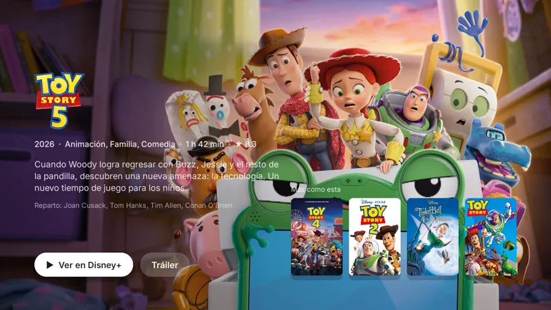
Un inicio rápido y sin anuncios para proyectores Android, diseñado como tvOS. Tus apps primero, qué ver esta noche y todos los controles del proyector a un botón.
Gratis y de código abierto · Sin cuenta · Sin anuncios · Un botón para volver atrás
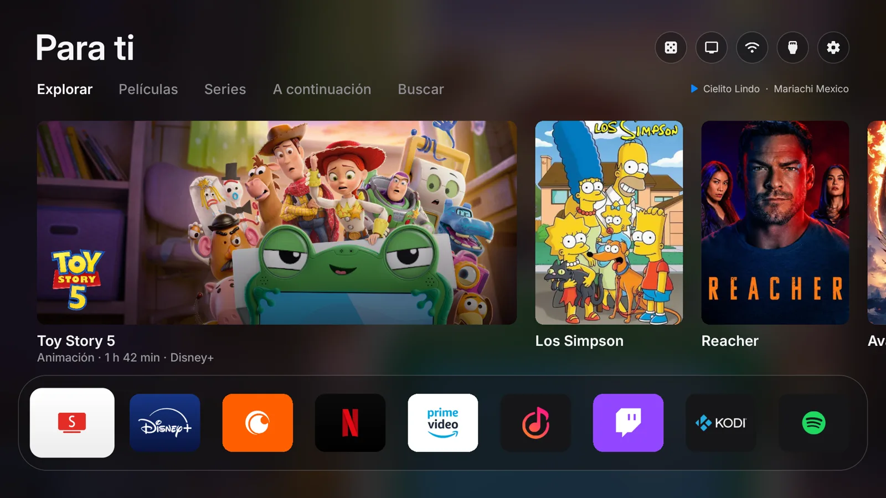
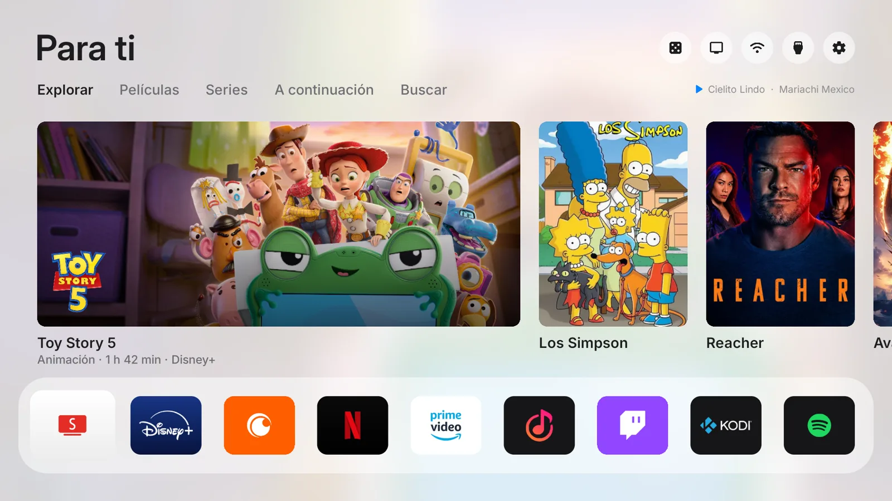
El inicio
Películas y series que de verdad están en tus apps, con su arte y su logo. Un botón las abre justo donde se ven. Nada patrocinado, nada que no hayas instalado.
Sinopsis, reparto, puntuación y tráiler sobre su propio arte. “Más como esta” te sigue llevando.

Escribe unas letras con el control: primero aparecen tus apps y los interruptores del proyector, luego lo que puedes ver.
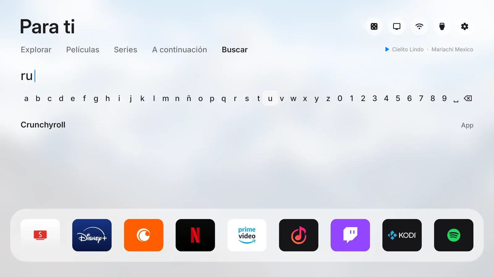
Retoma el episodio que dejaste en Disney+ y otras apps, con lo que falta.
Un botón tira los dados y elige una película o serie de tus propias apps.
Claro de día y oscuro de noche, según la salida y la puesta del sol en tu ciudad.
Centro de control
Pulsa el botón de menú del control en cualquier parte del inicio. Entradas, imagen, sonido, la lámpara y el apagado están ahí, y debajo una fila de widgets que se recorre como en tvOS.
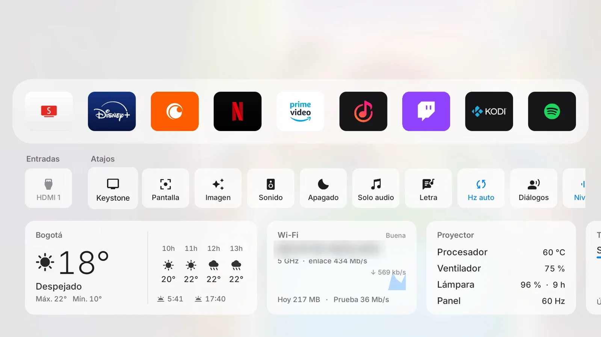
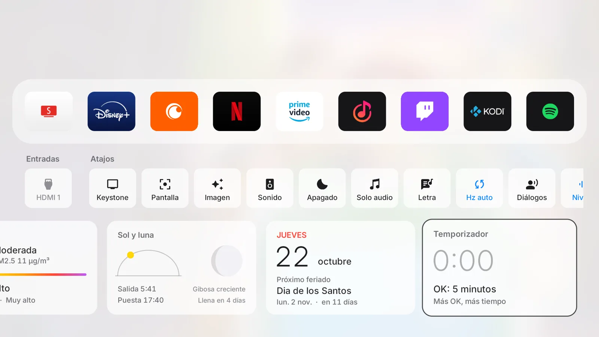
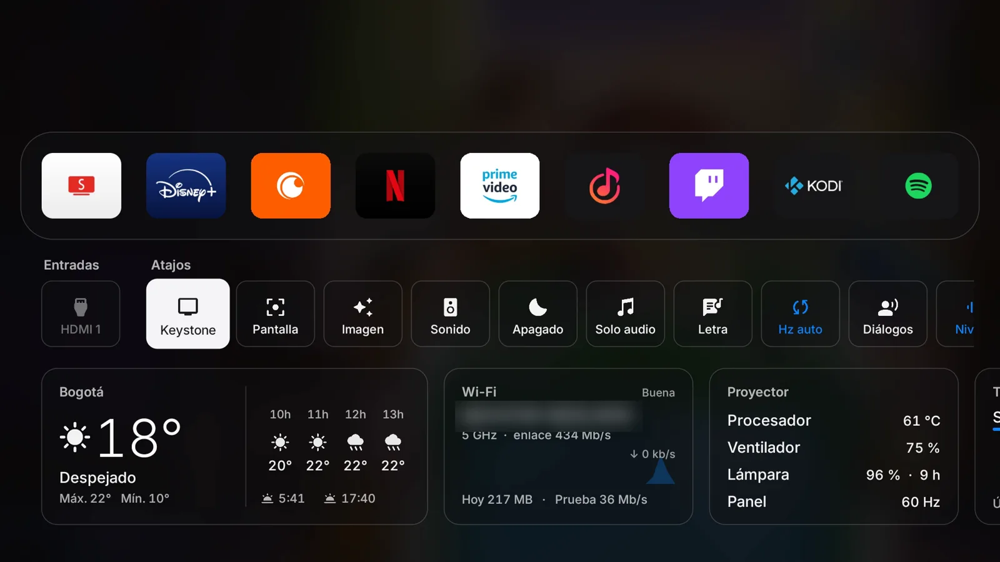
Hecho para proyectores
Hecho sobre un Wanbo T6 Max y probado en él todos los días. En otros proyectores Android, lo que el hardware no permite simplemente no aparece.
Endereza la imagen desde el sillón.
Enfoque, forma y brillo en tres pasos.
Menos brillo, menos calor y menos ruido para las pelis tarde.
Lámpara apagada, música encendida. Cualquier botón trae la imagen.
Cine, Deportes o Música: imagen y sonido de una vez.
El panel sigue los cuadros por segundo del video. Sin tirones.
Voces arriba, explosiones abajo, para las noches tranquilas.
A tu hora, un panel discreto ofrece apagar en 30 minutos.
Avisa antes de que se caliente demasiado, y cuenta las horas de lámpara.
La memoria libre de un vistazo; púlsalo para cerrar lo inactivo.
Limpia solo la caché de las apps y te dice cuánto liberó.
Tu parlante y su batería, iluminado mientras está conectado.
Letras
Spotify, YouTube Music o cualquier reproductor: la letra aparece línea por línea al ritmo de la canción, grande para toda la sala. Gratis, sin cuenta y guardada para la próxima.
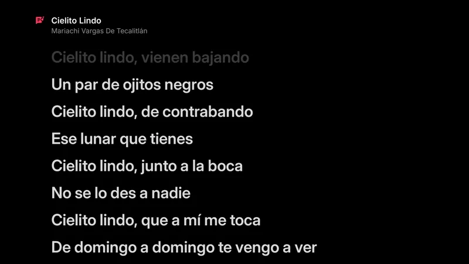
Protector de pantalla
Un paisaje por minuto, con la hora, el clima y lo que suena, como los fondos aéreos del Apple TV. O busca fotos libres y elige las tuyas.
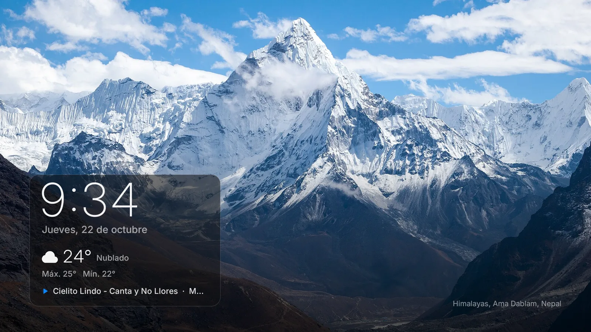
Busca fotos destacadas de Wikimedia Commons con el control y guarda las que te gusten.
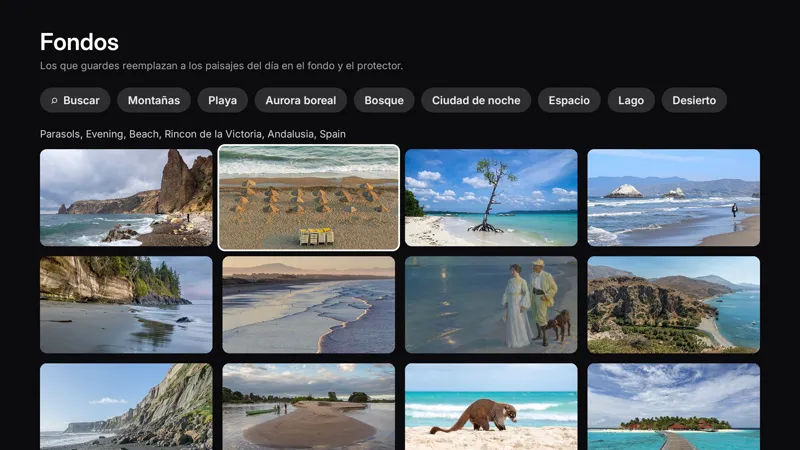
Se actualiza solo desde GitHub, revisa la firma y te cuenta qué cambió.
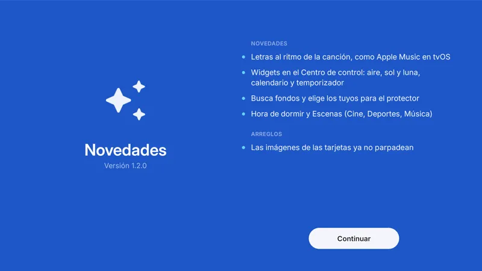
Dos diseños
El diseño clásico muestra arte grande. El diseño ligero es una lista de nombres sobre un paisaje que se mueve despacio: el más fluido en hardware modesto. Arrastra para comparar.
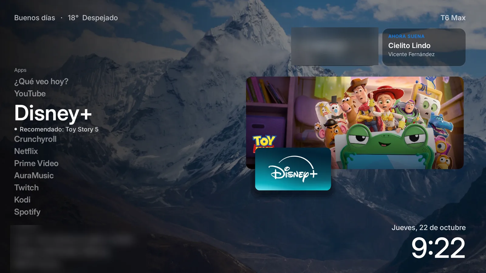
ClásicoLigeroInstalar
Necesitas una computadora en el mismo Wi-Fi que el proyector, con adb, y la depuración por red activada en el proyector (los Wanbo la traen abierta en el puerto 3333).
Conéctate al proyector e instala. Usa la dirección de tu proyector.
adb connect 192.168.1.50:3333 adb install -r FreeMyTV.apk
En el proyector abre Free My Projector → Inicio → Free My Projector, espera un minuto y pulsa Inicio. Pon tu ciudad y una clave gratis de TMDB en Preferencias.
Preguntas
Android 9 o superior, con depuración por red. Está hecho y probado en un Wanbo T6 Max (Amlogic T972); el keystone, el enfoque, la lámpara y el ventilador usan ese hardware y simplemente no aparecen donde no pueden funcionar. El inicio, el Centro de control, las letras y el protector funcionan en cualquier equipo Android TV.
No. Usa la propia depuración por red del proyector, la misma con la que lo instalaste, para cambiar el inicio y llegar a algunos ajustes.
Abre Free My Projector → Inicio → Original. Tu inicio, protector y apps vuelven como estaban. Si el nuevo inicio se cierra tres veces en cinco minutos, vuelve solo.
Las recomendaciones, el arte y las fichas vienen de The Movie Database. Una clave personal es gratis y toma dos minutos; sin ella igual tienes el inicio, un reloj grande y todo lo demás.
Sin cuenta y sin analíticas. Habla con TMDB, Open-Meteo (clima y aire), Wikimedia Commons (fondos), lrclib (letras) y GitHub (actualizaciones), y nada más.
Una vez al día revisa la última versión de este proyecto en GitHub y la instala solo si es más nueva y está firmada con la misma clave. Después de actualizar, una hoja te muestra las novedades.